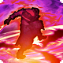

Volonté de fer
 Passif
Passif
Le score d’une statistique au choix des Thérians ne peut être réduit par aucun effet négatif.
« Des Thérians habitant les montagnes sont issus ceux qui portent le sang de puissants guerriers... »
Les Thérians partagent leur combinaison de caractéristiques humanoïdes et animales avec les Sentinelles ; cependant, les Thérians sont beaucoup plus petits, avec une peau surtout sans poils et plus agressifs par nature. Ils sont des guerriers dans l'âme, et la force d'un Thérian équivaut à leur valeur dans la plupart des domaines. Cette force n'est pas limitée à la bravoure martiale, aussi importante que soit cette combativité dans la culture Thérian ; certains prouvent leur force mentale en devenant des érudits concentrés, ou leur force spirituelle et magique en rejoignant des couvents d'oracles, perfectionnant ces compétences ou même les dirigeant. La société Thérian est organisée de manière féodale, et ils sont souvent les instigateurs lorsque la guerre plane sur le continent, car les Thérians se battent pour gagner de l'influence sur des territoires importants ou des symboles de statut. Les couvents des oracles, et les maisons nobles qui exercent leur influence sur eux, sont un symbole important des maisons actuellement les plus puissantes.
 Traits raciaux
Traits raciaux
 Augmentation de caractéristique : +2 à un attribut et à son maximum
Augmentation de caractéristique : +2 à un attribut et à son maximum Langues : Commun, Thérian
Langues : Commun, Thérian Vitesse de déplacement : 9 mètres
Vitesse de déplacement : 9 mètres Compétences supplémentaires : Athlétisme, Acrobaties
Compétences supplémentaires : Athlétisme, Acrobaties Compétences d'Union : Tri-Attaque, Attaque Totale Aptitudes raciales
Passif
Compétences d'Union : Tri-Attaque, Attaque Totale Aptitudes raciales
Passif
Le score d’une statistique au choix des Thérians ne peut être réduit par aucun effet négatif.
Passif
Accorde une réaction supplémentaire par tour de combat.